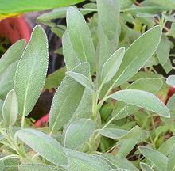
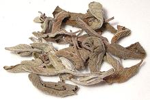
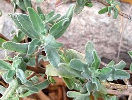
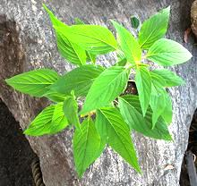
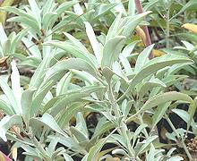
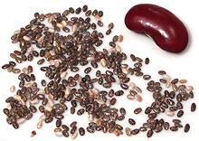
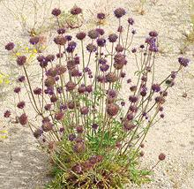
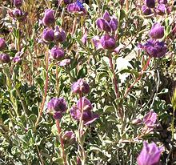
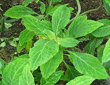

SAFARI
Users
General & History
Sage is a worldwide herb (except Antarctica). Unlike other Lamiaceae, its center of diversity is in Central and South America. Sages are highly aromatic and of great culinary and medicinal interest. Note that "sagebrush" is not sage, it's in the daisy family.
Varieties
Garden Sage

[Common Sage; Salvia officinalis]
Native to the Mediterranean region, this sage is now planted in gardens
and by herb growers worldwide, and it is now naturalized in a number of
regions. throughout the world. This is the culinary sage sold fresh in
North America, while the dried is Greek sage. In cooking it is
particularly used with fatty meats and in poultry stuffings. It is one
of several sages from which an essential oil is distilled, but not the
most important, and it has a medicinal reputation from ancient times.
There are also many decorative cultivars that may have leaves colored
purple, white and yellow, as well as white, yellow and green variegated
varieties, but these generally have less flavor than the plain green.
Details and Cooking.
Greek Sage
 [Salvia fruticosa]
Native to the eastern Mediterranean, southern Italy, the Canary Islands
and North Africa, this sage has been in cultivation since prehistoric
times. This species accounts for probably over 90% of the dried sage sold
in North America. It is also used for extraction of an essential oil, as
well as being burned as incense. Wasp galls an inch in diameter are often
found growing on this sage. They are called "sage apples" and are peeled
and eaten. The wasp causing the galls was not discovered until 2001. The
photo specimen was from Egypt and was quite strong despite its desiccated
appearance.
Details and Cooking.
Cleveland Sage
 [Blue Sage, Musk Sage, Maiden Sage (archaic); Salvia clevenandii]
Native to the coastal scrub of San Diego County, California and northern Baja California, this is a highly aromatic sage that flowers profusely. It will grow as far north as Los Angeles County in well drained sandy soil, but above LA it is replaced by White Sage. It is much used for sachets and similar aromatic applications but can also be used in place of Garden Sage for culinary purposes except it is so strong the amount used should be cut significantly.
This sage is also a powerful medicinal. I have found a strong tea
of Cleveland Sage almost as effective as the Giant White Sage for
drying up a runny nose - blessed relief when I have a cold. Since it
grows well here in Los Angeles I keep a plant on hand.
Pineapple Sage
 [Salvia elegans]
Native to the highlands of Mexico and Guatemala, this sage is often used
to make an herbal tea, and the leaves can also be used fresh as an herb.
It has also been extensively used in Mexican traditional medicine as a
treatment for anxiety.
Giant White Sage
 [Sacred Sage, Coastal Giant Sage; Salvia apiana]
Native to the coastal scrub of Southern California and Mexico, this tall
(to 5 feet) sage is used as a cleansing incense by American Indians,
some Neopagan groups and other spiritual seekers. The leaves look
much like those of Garden Sage, just a lot bigger, and can be used in
cooking. It is also used medicinally, especially to suppress mucous
secretions from the sinuses, throat and lungs. I have used this sage
gathered in Ojai California and found a strong tea made from it quite
effective. It is not recommended for nursing mothers as it suppresses
lactation. Coastal Indian tribes have used the seeds to make porridge.
Details and Cooking
Chia
 [Tokhm-e Sharbati (Persia - lit Sharbati Seed); Salvia hispanica]
Native to Mexico and Guatemala, chia seed was the third most important crop of the Aztecs, after corn and beans and ahead of amaranth. It is highly nutritious and gluten free, with a high protein content, and is very rich in omega-3 fatty acids, antioxidants, and dietary fiber. Today the leading producer is Australia, followed by Mexico, Bolivia, Argentina, Ecuador and Guatemala.
North of the Mexican border the main use of chia seed has been for
the green fur on Chia Pets, but it has started to penetrate the Health
Food and Ethnic Foods markets. In Persia (Iran) it is now used in
Sharbati (cooling soft drinks), alone or in combination with the
traditional London Rocket
seeds. Chia sprouts are edible and used similarly to alfalfa sprouts.
Food manufacturers are now experimenting with replacement of as much
as 25% of the egg and oil in cakes with a gel made from chia.
Details and Cooking.
Golden Chia
 [Chia Sage, Desert Chia; Salvia columbariae]
Native to California, Nevada, Arizona, New Mexico, Sonora, and Baja
California, this plant prefers undisturbed dry coastal sage scrub
and chaparral. It grows to a little over 18 inches tall, but is
usually shorter. This sage was very important to American Indians in
the growing region as a highly nutritious food and for medicinal
purposes. While less important today, it is still often used as it
was in the past.
Tobacco Sage
 [Salvia dorrii]
Native to the southwest of the United States, this sage has long been used
by American Indian tribes in the region as a sweat lodge incense and smoked
for a mild hallucinogenic effect. It is also used medicinally, especially
to suppress mucous secretions from the sinuses, throat and lungs. I
haven't tested this so I don't know if it's as effective as the
Giant White Sage or Cleveland Sage. It is not recommended for nursing
mothers as it suppresses lactation.
Photo by Stan Shebs distributed under license Creative
Commons
Attribution 3.0 Unported
Diviner's Sage
 [Herba de Maria; Salvia divinorum]
Native to the cloud forests of Oaxaca, Mexico, this sage is used for it's dissociative psychoactive properties. It has long been used by Mazatec shamans to facilitate visionary states. It is fairly mild and is not particularly toxic.
In California and Canada sales to minors are illegal, but a few Red
States have banned it entirely. It is also banned in Australia and some
European countries. Import and sales are banned in Russia and Spain, but
I guess you can grow your own there.
Photo by Phyzome distributed under license Creative
Commons
Attribution 3.0 Unported